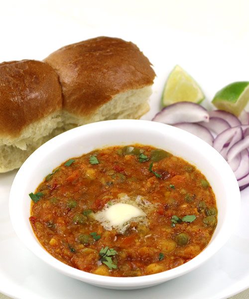

Lasagna

Discription:
Pav Bhaji – a spicy curry of mixed vegetables (bhaji) cooked in a
special blend of spices and served with soft buttered pav (bread bun shallow fried in butter),
is any Indian food lover’s dream. The boiled and mashed veggies give it a smooth yet chunky
texture while specially blended Pav Bhaji Masala gives it an irresistible, mouthwatering aroma
and taste – serve it with a piece of buttery shallow fried bun and voila! – it’s a perfect party
food that can be made in advance. It’s also the best way to make your kids eat some veggies as
sometimes kids don’t like the taste of a particular veggie, but in pav bhaji they wouldn’t even
notice any veggie and eat joyfully. Whether you want to entertain the guests or feed your kid,
this recipe’s step by step photos, tips and variations will help you make best pav bhaji at home
in just 40 minutes.
Ingredients:
- 2 tablespoons oil, divided
- 1 large onion, grated
- ¾ teaspoon salt, or as needed
- 5 cloves garlic, grated
- 1 ¼ cups water, or more as needed
- 2 teaspoons pav bhaji masala, divided
- 1 (14.5 ounce) can diced tomatoes
- 2 small potatoes, peeled and cut into small cubes
- 3 tablespoons canned sweet corn, drained
- 1 teaspoon mild chile powder
- 1 teaspoon ground coriander
- Eg1 pinch ground gingerg
- ½ teaspoon lemon juice
- 1 tablespoon unsalted butter, or more to taste
Steps:
- Heat 1 tablespoon oil in a saucepan over medium heat. Add onion and 1/4 teaspoon salt;
fry until browned, 5 to 8 minutes. Add garlic; cook and stir for 4 minutes. Pour in 1 cup
water. Add 1 teaspoon pav bhaji masala and 1/2 teaspoon salt. Bring to a boil. Reduce heat
and simmer until flavors combine, about 10 minutes
- Add tomatoes, potatoes, and corn to the saucepan. Season with chile powder, coriander, and
ginger. Bring to a boil. Reduce heat and simmer for 15 minutes. Mash curry gently with the
back of a wooden spoon or spatula. Simmer for 10 minutes more. Taste and adjust salt. Add 1/2
teaspoon pav bhaji masala and lemon juice. Mash slightly again.
- Add 1/4 to 1/2 cup water to give curry a runny consistency. Add remaining 1 tablespoon oil
and butter; stir until butter is melted. Divide into serving bowls and sprinkle remaining pav
bhaji masala on top.